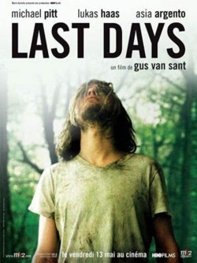

Ano: 1999
País: EUA
Ficha Técnica:
Título Original: The Green Mile
Gênero: Drama
Site Oficial: www.thegreenmile.com
Estúdio: Warner
Direção: Frank Darabont
Roteiro: Frank Darabont, baseado em romance de Stephen King
Produção: Frank Darabont e David Valdes
Música: Thomas Newman
Direção de Fotografia: David Tattersall
Desenho de Produção: Terence Marsh
Figurino: Karyn Wagner
Edição: Richard Francis-Bruce
Elenco:
Tom Hanks (Paul Edgecomb)
James Cromwell (Warden Hal Moores)
Michael Duncan (John Coffey)
Bonnie Hunt (Jan Edgecomb)
David Morse (Brutus "Brutal" Howell)
Michael Jeter (Eduard Delacroix)
Graham Greene (Arlen Bitterbuck)
Doug Hutchison (Percy Wetmore)
Sam Rockwell (William "Wild Bill" Wharton)
Barry Pepper (Dean Stanton)
Gary Sinise (Burt Hammersmith).
|
Sinopse:
Ambientado em 1935, no corredor da morte de uma prisão sulista,
À espera de um milagre é a história entre o chefe
de guarda da prisão (Tom Hanks) com um de seus prisioneiros (Michael
Clarke Duncan). Aos poucos, desenvolve-se entre eles uma relação
incomum, baseada na descoberta de que o prisioneiro possui um dom mágico
que é, ao mesmo tempo, misterioso e milagroso.
Premiações:
- Recebeu 4 indicações ao Oscar: Melhor Filme, Melhor
Ator Coadjuvante (Michael Clarke Duncan), Melhor Som e Melhor Roteiro
Adaptado.
- Recebeu uma indicação ao Globo de Ouro, de Melhor Ator
Coadjuvante (Michael Clarke Duncan).
Curiosidades:
- O livro "The Green Mile", que serviu de base para a elaboração
do roteiro de À Espera de um Milagre, foi publicado nos Estados
Unidos em seis volumes.
- Trinta ratos de verdade se revezaram em cena para "interpretar"
o ratinho Mr. Jingles.
- No filme À Espera de um Milagre existem três guardas
penitenciários cujos nomes são Harry, Dean e Stanton.
Trata-se de uma homenagem ao ator Harry Dean Stanton, que participa
do filme interpretando o condenado que é sempre chamado para
testar a cadeira elétrica.
- Este é apenas o 2º filme do diretor Frank Darabont e é
também a 2ª vez que trabalha com um roteiro baseado num
livro de Stephen King. Seu trabalho anterior fora Um Sonho de Liberdade,
de 1994.
- O filme arrecadou, apenas nos Estados Unidos, mais de 130 milhões
de dólares, mesmo com seu tempo de duração sendo
de 3 horas.
|
|
Ano: 2002
País: EUA
Ficha Técnica:
Titulo Original: A Walk to Remember
Gênero: Drama/Romance
Duração: 101 min
Estúdio: Warner Bros.
Direção: Adam Shankman
Roteiro: Nicholas Sparks, Karen Janszen
Produção: Denise Di Novi, Hunt Lowry
Elenco:
J. Shane West - Landon Carter
Mandy Moore - Jamie Sullivan
Peter Coyote - Reverendo Sullivan
Daryl Hannah - Cynthia Carter
Lauren German - Belinda
Clayne Crawford - Dean
Al Thompson - Eric
Paz de la Huerta - Tracie
Jonathan Parks - Jordan Walker
Matt Lutz - Clay Gephardt
|
Sinopse:
Essa é a comovente história de Landon, o rapaz mais popular
da escola. Desajustado e agressivo, ele se apaixona por Jamie, uma menina
que vive em outro mundo. Filha do pastor da pequena cidade, ela é
estudiosa e compenetrada. Jamie nunca imaginou conversar com Landon,
quanto mais se apaixonar perdidamente por ele. Mas o destino que os
uniu vai também lhes pregar uma peça. O lindo romance
entre Landon e Jamie será Um Amor Para Recordar, o Romeu e Julieta
do Século 21, um filme inesquecível que merece ser descoberto.
|
|
Ano: 1967
País: EUA
Ficha Técnica:
Título Original: To Sir, With Love
Gênero: Drama
Duração: 105 min.
Diretor: James Clavell
Elenco: Sidney Poitier, Judy Geeson, Christian Roberts, Suzy Kendall,
Lulu, Faith Brook, Christopher Chittell, Geoffrey Bayldon, Patricia
Routledge, Adrienne Posta, Edward Burnham, Rita Webb, Fiona Duncan,
Roger Shepherd, Cyril Shaps, Gareth Robinson, Mona Bruce, Avis Bunnage,
Marianne Stone.
|
Sinopse:
Um jovem professor (Sidney Poitier) enfrenta alunos indisciplinados
e desordeiros ao resolver dar aulas num bairro operário de
Londres. Clássico que refletiu alguns dos problemas e medos
dos adolescentes dos anos 60.
|
|
Ano: 2006
País: EUA/Reino Unido
Ficha Técnica:
Título Original: The Children of Men
Gênero: Aventura, Drama
Duração: 114 min
Estúdio: Universal Pictures
Direção: Alfonso Cuarón
Roteiro: Alfonso Cuarón, P.D. James, Timothy J. Sexton, Mark
Fergus, Hawk Ostby
Produção: Marc Abraham, Tony Smith, Iain Smith, Hilary
Shor, Eric Newman
Elenco:
Clive Owen (Theodore Faron)
Julianne Moore (Julian Taylor)
Michael Caine (Jasper)
Chiwetel Ejiofor (Luke)
Charlie Hunnam (Patric)
Claire-Hope Ashitey (Kee)
Pam Ferris (Miriam)
Danny Huston (Nigel)
Peter Mullan (Syd)
Oana Pellea (Marichka)
Paul Sharma (Ian)
Jacek Koman (Tomasz)
|
Sinopse:
Clive Owen e Julianne Moore são os protagonistas do drama futurista
"Filhos da Esperança" ("Children Of Men")
do cineasta mexicano Alfonso Cuarón, de "E Tua Mãe
Também" (2001) e "Harry Potter e o Prisioneiro de Azkaban"
(2004). O longa faz uma denúncia do mundo atual, projetando no
futuro os horrores do presente. "Filhos da Esperança"
se passa em 2027, em uma Londres cheia de lixo espalhado pelas ruas
e repleta de imigrantes ilegais e militantes islâmicos. Nesse
clima, um grupo clandestino, que lembra uma seita, planeja um levante.
Soldados fortemente armados patrulham a capital britânica como
se fosse uma fortaleza. Refugiados são levados em massa para
campos de deportação. Quase 19 anos se passaram desde
o nascimento do último bebê. Contra esse pano de fundo
de desespero, um ex-ativista (Clive Owen) concorda em ajudar a levar
uma mulher milagrosamente grávida (Claire Hope) para um local
seguro em alto mar. O nascimento desse bebê pode ajudar a salvar
a humanidade da extinção. Juliane Moore vive a líder
do movimento pelos direitos dos refugiados. O ator inglês Michael
Keane completa o time de estrelas no papel de um velho sábio
rebelde. Parte de "Filhos da Esperança" foi rodado
com a técnica da câmera no ombro, porque Alfonso Cuarón
queria que o público se sentisse participando da ação
. "Acho que às vezes o que parece sombrio para nós
é o cotidiano de muitas pessoas. Às vezes esquecemos que
vivemos dentro de uma bolha muito confortável", afirmou
Cuáron. "O filme está cheio de ícones, de
imagens que fazem parte de nossa consciência coletiva. Não
é um filme de ficcção científica, e sim
um filme que fala do presente", disse o diretor. "Apesar de
tudo, o filme fala da esperança e de como a ideologia termina
pode anular o diálogo", garantiu Cuarón. "A
intenção de Cuarón sempre foi fazer um filme sobre
os grandes problemas que nos preocupam hoje, saltando 20 anos para o
futuro e dizendo que devemos tomar cuidado, porque podemos estar enveredando
nesse caminho", afirmou Clive Owen.
|
|

Ano: 2005
País: EUA
Ficha Técnica:
Título Original: Last Days
Gênero: Drama
Tempo de Duração: 97 minutos
Site Oficial: www.lastdaysmovie.com
Estúdio: HBO Films / Pie Films Inc. / Meno Film Company / Picturehouse
Entertainment LLC
Distribuição: Fine Line Features
Direção: Gus Van Sant
Roteiro: Gus Van Sant
Produção: Dany Wolf
Música: Rodrigo Lopresti
Fotografia: Harris Savides
Direção de Arte: Tim Grimes
Figurino: Michelle Matland e Allan McCosky
Edição: Gus Van Sant
Efeitos Especiais: Illusion Arts Inc.
Elenco:
Michael Pitt (Blake)
Lukas Haas (Luke)
Asia Argento (Asia)
Scott Green (Scott)
Nicole Vicius (Nicole)
Ricky Jay (Detetive)
Ryan Orion (Donovan)
Adam Friberg (Elder Friberg)
Andy Friberg (Elder Friberg)
Thadeus A. Thomas (Vendedor das Páginas Amarelas)
|
Sinopse:
Um famoso músico de rock vive em sua mansão isolada, se
afastando cada vez mais dos amigos. Dirigido por Gus Van Sant (Gênio
Indomável) e com Michael Pitt e Asia Argento no elenco. O filme
conta os últimos dias da vida de Kurt Cobain, o ex-vocalista
do Nirvana.
|
|
|